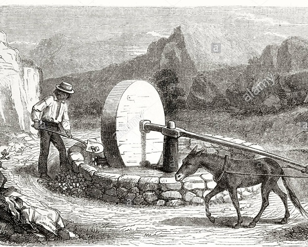

Eselsmühle
Auf dem Feld bei Plas gab es eine von einem Esel angetriebene Rotationsmühle. Die Mühle quetschte Ginster, was zu diesen Zeiten ein wichtiger Bestandteil der Ernährung von Pferden und Kühen war.

Auf dem Feld bei Plas gab es eine von einem Esel angetriebene Rotationsmühle. Die Mühle quetschte Ginster, was zu diesen Zeiten ein wichtiger Bestandteil der Ernährung von Pferden und Kühen war.